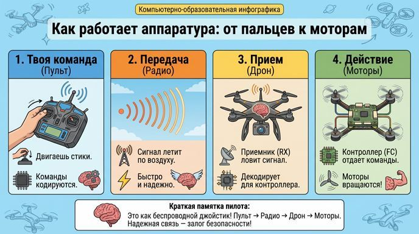
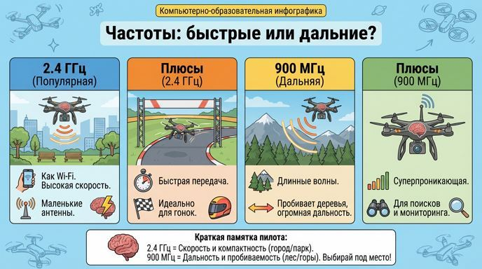
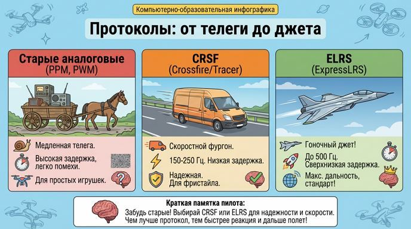

Аппаратура управления: нить, которая связывает тебя с дроном
Привет, юный пилот! Помнишь, как полётный контроллер — это мозг дрона? Но мозг не услышит твои команды без — аппаратуры управления (ПДУ, или "Аппа"). Это пульт в твоих руках, который передаёт сигналы дрону через радио. От её надёжности зависит, вернётся ли дрон домой или потеряется. Сегодня разберёмся, как она работает, какие частоты и протоколы бывают, и зачем нужны каналы. Это ключ к безопасным полётам! Готов? Держи пульт крепче!
Как работает аппаратура: от пальцев к моторам
Всё просто: Ты двигаешь стики на пульте (ПДУ) — команды кодируются в сигнал — радио передаёт его на приёмник (RX) в дроне — приёмник декодирует и отправляет в полётный контроллер — контроллер отдаёт команды на моторы. Это как беспроводной джойстик, но супернадёжный! Если связь потеряется (failsafe), дрон может сам сесть или вернуться. Главное — выбрать правильную аппаратуру, чтобы избежать помех и задержек.

Частоты: быстрые или дальние?
Аппаратура работает на радиочастотах — это как волны в океане. Вот основные:
✔ 2.4 ГГц: Самая популярная, как Wi-Fi. Плюсы: Маленькие антенны (компактно), высокая скорость передачи (быстрые команды). Минусы: Плохо проходит через деревья, стены или в городе с кучей помех (от других устройств). Идеально для гонок или полётов на виду.
✔ 900 МГц (или похожие, как 433/868 МГц, LoRa): Длинные волны для дальних приключений. Плюсы: Суперпроникающая способность (через лес, горы), огромная дальность (километры). Минусы: Большие антенны (неудобно), медленнее передача данных. Подходит для поисков или мониторинга в дикой природе
Выбор зависит от места: в парке — 2.4 ГГц, в лесу — 900 МГц, чтобы сигнал не потерялся.

Протоколы: от телеги до джета
Протокол — это "язык" общения между пультом и дроном, как способ доставки груза: скорость, надёжность, объём
✔ Старые аналоговые (PPM, PWM): Как медленная телега. Высокая задержка (команды приходят поздно), легко помехи. Только для простых игрушек.
✔ Современные цифровые:
o CRSF (Crossfire/Tracer): Как скоростной фургон. Частота обновления 150-250 Гц, низкая задержка, надёжная. Хорош для фристайла.
o ELRS (ExpressLRS): Как гоночный джет! Сверхнизкая задержка (до 500 Гц), максимальная дальность, устойчив к помехам, open-source (бесплатный и крутой). Революция — теперь стандарт для всех!
Чем лучше протокол, тем быстрее дрон реагирует и дальше летает без сбоев.

Каналы: виртуальные провода для команд
Каналы — это как отдельные "кнопки" в сигнале. Обычно 8-16 штук:
✔ Основные (1-4): 1 — Тяга (газ, вверх/вниз), 2 — Рыскание (поворот вокруг оси), 3 — Тангаж (нос вверх/вниз), 4 — Крен (наклон вбок).
✔ Дополнительные (5+): Для переключения режимов полёта, активации камеры, сброса или других фишек.
Краткая памятка от бывалого пилота:
✔ Аппаратура — нить к дрону: передатчик → радио → приёмник → контроллер.✔ Частоты: 2.4 ГГц для скорости и компактности, 900 МГц для дальности и проникновения.
✔ Протоколы: Забудь старые, бери CRSF или ELRS для надёжности и скорости.
✔ Золотое правило: Надёжная связь — основа безопасности, выбирай под место и задачу!
Удачи на занятиях! Скоро мы подключим пульт и увидим, как дрон оживает. Лети надёжно и без потерь!
Навигация по образовательному курсу
Урок 1. Мир дронов: история, виды и правила безопасности
Урок 2. Рама. Варианты исполнения.
Урок 3. Моторы, электродвигатели.
Урок 4. Пропеллеры.
Урок 5. Регулятор оборотов.
Урок 6. Контроллер полета (автопилот).
Урок 7. Приемник-передатчик (ПДУ).
Урок 8. Аккумуляторная батарея (АКБ). Виды и маркировка.
Урок 9. Вспомогательное оборудование.
Для перехода к следующему учебному материалу используйте кнопку «Вперед» в верхней навигации.